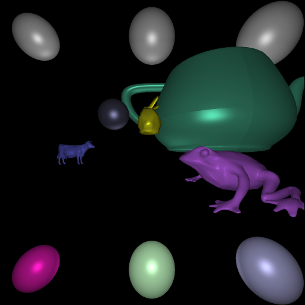
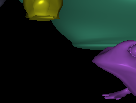
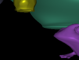
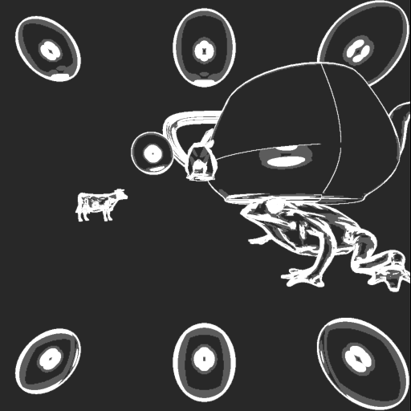
Note: Pure white is full 4x ray coverage at given pixel.
3.576 seconds and 657231 rays.
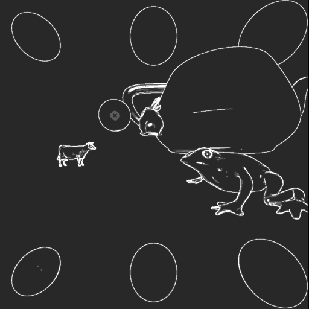
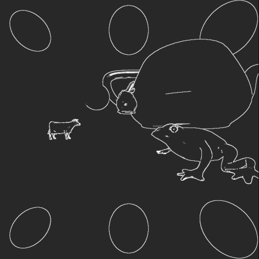
1.645 seconds and 335452 rays
Input file: first_input.txt
This image satisfies the specifications from the instructions.
It took 1.795 seconds and 360539 rays to generate this image at 4x adaptive sampling and 5% tolerance. It took 3.841 seconds and 1048576 (i.e. 1024x1024) rays to generate this image at 2x uniform sampling. It took 1.288 seconds and 262144 (i.e. 512x512) rays to generate this image at 1x sampling.
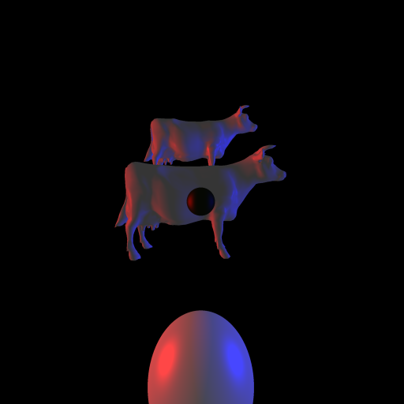
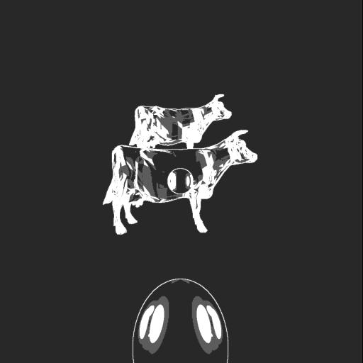
Input file: second_input.txt
It took 1.967 seconds and 486083 rays to generate this image.
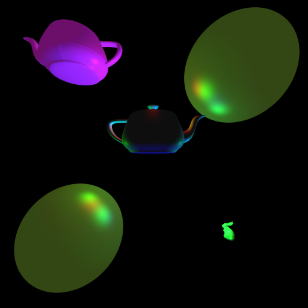
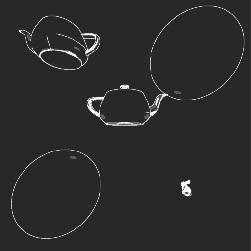
Input file: third_input.txt
It took 0.913 seconds and 328047 rays to generate this image.
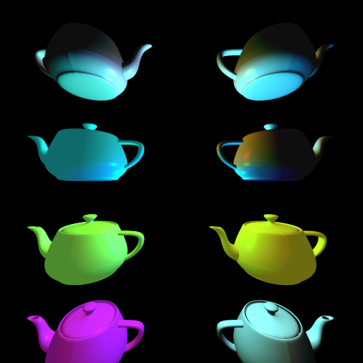
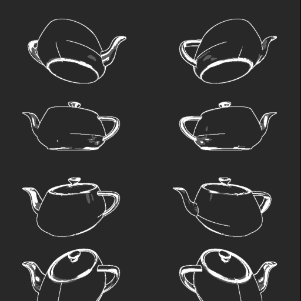
Input file: fourth_input.txt
It took 3.249 seconds and 463476 rays to generate this image.